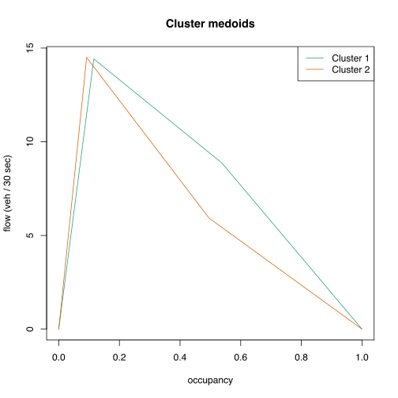

Clark Fitzgerald (Statistics), Professor Michael Zhang (Civil Engineering)
UC Davis
Nov 2017
This is a brief set of working notes for a project analyzing highway traffic sensor data.
This map shows traffic sensors colored based on the shape of their fundamental diagram. Zoom and click the points for more information.
The capacity is the highest point on the fundamental diagram, the point where the left and mid lines meet. It's in units of vehicles per hour.
The image below shows the medoid (average) shapes of the clusters. A few notes:

I used a kernel based method to cluster the stations. The kernel is based on the inner product between functions over the interval (0, 1).
Computation currently consists of the following steps:
Thu Nov 30 14:24:25 PST 2017
Beginning to write paper now.
The size and structure of the data presented a challenge; this is why we wanted to work with it.
We first downloaded 10 months from January 2016 - October 2016 of 30 second sensor data from the CalTrans Performance Measurement System (PEMS) http://pems.dot.ca.gov/ website onto a local server. I chose to only download those files from the San Francisco Bay Area (CalTrans district 3) because there is a large amount of data there, and we'm somewhat familiar with the roads.
Each file represents one day of observations. There are around 10 million rows and 26 columns per file that take up about 90 - 100 MB each when compressed on disk. Represented in memory as double precision floating point numbers each file will occupy about 2 GB of memory. This size becomes unwieldy with most programming languages. I processed 284 files total, which will take up 500+ GB if completely loaded into memory. This size motivated some new computational techniques.
Hive provided the crucial piece of infrastructure to process this data. Using schema on read with external files in Hadoop File System (HDFS) meant that all we had to do to load the data was copy the files to HDFS, so the load took less than 5 minutes.
We used Hive's CLUSTER BY to separate the data into different stations before analyzing the fundamental diagram for each station. Each station had around 800 million observations corresponding to one every 30 seconds for 10 months. We processed results in a streaming Map Reduce using the R language to express the analytic operations.
When we did this we weren't aware of the RHive package, which hasn't been actively maintained since 2015. Our computational model has less sophisticated interactive features, but is much more efficient for batch processing based on large groups, because groups are loaded in an operated on at a million elements at a time rather than line by line. An experiment showed that line by line processing would slow the program down by a factor of several hundred. Then we would be measuring run times in days rather than in minutes.
We fit the fundamental diagram modeling vehicle flow per 30 seconds as a function of sensor occupancy. We used three different increasingly complex piecewise linear functions.
The first method used robust regression to fit curves on the left and right hand sides of a cutoff where occupancy = 0.2. We initially chose robust regression because of its resistance to outliers. These models included an intercept, so each station is represented by two linear models, which becomes 4 floating point numbers. Including the intercept means that the fundamental diagram doesn't necessarily pass through the points (0, 0) and (1, 0). In the areas of high density many didn't pass through (1, 0).
The second method fit three separate lines from points in different regions:
We fit the lines using least squares subject to the constraints that the fundamental diagram must pass through (0, 0) and (1, 0). Enforcing this constraints makes for a more reasonable model, since we know that the fundamental diagram must satisfy this. We ignored the points in the region (0.1, 0.2) because points vary widely in this region as the traffic transitions to a congested state.
The last method used a nonparametric method based on binning the data based on the values of the occupancy and then computing means for the flow in each bin. We started out with a fixed minimum bin width of w = 0.01, which means that there will be no more than 1 / w = 100 bins in total. We chose 0.01 because it provides sufficient resolution for the fundamental diagram in areas of low density. Furthermore, we required that each bin has at least k observations in each bin. Some experimentation for a few different stations showed that choosing k = 200 provided a visually smooth fundamental diagram.
TODO: Is there any theoretical statistical justification for this technique? It's somewhat a data summary technqiue. How much information is preserved?
Because there are more observations in areas of low occupancy we have more bins here. To construct the piecewise linear fundamental diagram we then simply define lines connecting each mean. This minimizes the assumptions we need to make about the fundamental diagram. Indeed, this derived data could be used for further analysis of empirical traffic flow.
Fitting the data produces a fundamental diagram for each station. However, we removed stations that satisfied any of the following conditions: - all observations in one bin are the same. This probably comes from a sensor error. - all observations had mean flow less than 1 vehicle per 30 seconds. If occupancy is nonzero and flow is always less than 1 then this means flow isn't being properly counted. - there are few observations in the area of high density. We experimented a bit and found a reasonable filter to be fewer than 10 bins in an area of occupancy greater than 0.2. These may be real phenomena in the data rather than sensor errors; it simply means that very little congestion (high occupancy) events happened at that station during the time of analysis.
All this filtering brought the number of stations down from 3722 to 1379, so about 37 percent of the data was preserved. Only about 50 percent of the stations even generate data. This filtering doesn't bias results, because ...
For each of the fundamental diagrams we experimented with clustering based on the function inner products. Since the fundamental diagram is a function on [0, 1], the inner product between two different fundamental diagrams $$f$$ and $$g$$ is defined as
$$ \langle f, g \rangle = \int_0^1 f(x) \cdot g(x) dx. $$
Since we only considered piecewise linear functions this has a closed analytic form.
We computed these inner products between every pair of functions, producing something analagous to a covariance matrix $$X$$ of dimension 1379 x 1379. Then we scaled it into a correlation matrix $$Y$$ so that we only measure the similarity of the shapes, ignoring the magnitude:
$$ Y{ij} = \frac{X{ij}}{\sqrt{X{ii} \cdot X{jj}}} $$
The fundamental diagram is necessarily positive, so values can range between 0 and 1. Values near 1 imply that the shapes are very similar.
TODO: Find reference for clustering based on correlation matrix.
Let $$J$$ be a matrix where every entry is 1. We used the matrix $$J - Y$$ as the distance matrix to input into the 'Partitioning Around Medoids' algorithm. Inspection of the silhouette plots provided only slight evidence for clustering the fundamental diagrams into $$k = 2$$ groups. Silhouette plots for larger values of $$k$$ provided no evidence that there should be more groups.
Plotting actual fundamental diagrams for the $$k = 2$$ groups showed that there is really just one dominant shape of fundamental diagram. We failed to find real evidence of clusters based on this technique.
A more plausible explanation is that there's one dominant shape of fundamental diagram, and then some deviations from this.
The bold lines in the images come from the stations that have the highest median correlation to all other station. In this sense they are the "median" stations, and are the most centered in the data.